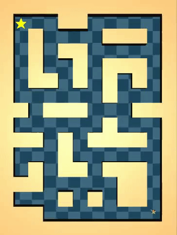
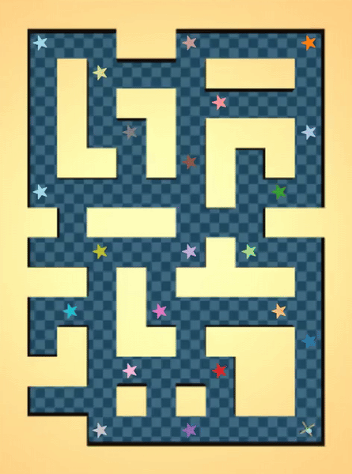

|
Kwanyoung Park Hello! I'm Kwanyoung, a first-year PhD student at UC Berkeley, advised by Prof. Sergey Levine and Prof. Pieter Abbeel. Before joining Berkeley, I was a research intern at RLLAB in Yonsei University, working with Prof. Youngwoon Lee on tackling offline RL problems with model-based approaches, and unsupervised RL problems. Previously, I have done a research internship at Human-centered Computer Systems Lab in Seoul National University with Prof. Youngki Lee, where I explored connections between machine learning processes and human learning. Email / CV / Google Scholar / Github / X (Twitter) |

|
ResearchThe goal of my research is to develop a "foundational embodied agent", an embodied agent that is generalizable and rapidly adapt to novel tasks with few demonstrations. To enable this, foundational models must develop priors about the world, capturing task distributions (e.g., manipulation, goal-reaching) and environmental dynamics (e.g., physical properties). My current focus is on three key approaches:
|
Publications(* denotes equal contribution) |

|
Scalable Offline Model-Based RL with Action Chunking
Kwanyoung Park, Seohong Park, Youngwoon Lee, Sergey Levine Arxiv, 2025 paper / code / website / thread We propose Model-Based RL with Action Chunks (MAC), a simple yet powerful offline model-based RL method that leverages 100-step model rollouts for value estimation, by utilizing rejection sampling from an expressive, flow-based, action-chunked behavior cloning (BC) policy. MAC achieves strong performance and scales effectively to large datasets, significantly outperforming prior model-based approaches on both standard and 100M-scale OGBench datasets. |
|  |
Model-based Offline Reinforcement Learning with Lower Expectile Q-Learning
Kwanyoung Park, Youngwoon Lee ICLR, 2025 paper / code / website / thread We introduce a novel model-based offline RL method, Lower Expectile Q-learning (LEQ), which enhances long-horizon task performance by mitigating the high bias in model-based value estimation via expectile regression of λ-returns. Our empirical results show that LEQ significantly outperforms previous model-based offline RL methods on long-horizon tasks, such as the D4RL AntMaze tasks, matching or surpassing the performance of model-free approaches. |
|  |
TLDR: Unsupervised Goal-Conditioned RL via Temporal Distance-Aware Representations
Junik Bae, Kwanyoung Park, Youngwoon Lee CoRL, 2024 paper / code / website / thread We propose a novel unsupervised goal-conditioned RL method, TLDR, which leverages TemporaL Distance-aware Representations. Our approach selects faraway goals to initiate exploration and compute intrinsic exploration rewards and goal-reaching rewards. Our experimental results in robotic locomotion and manipulation environments demonstrate that our method significantly outperforms previous unsupervised GCRL methods in achieving a wide variety of states. |

|
VECA: A New Benchmark and Toolkit for General Cognitive Development
Kwanyoung Park*, Hyunseok Oh*, Youngki Lee AAAI, 2022 (Oral Presentation, Acceptance Rate: 384/9,251 = 4.15%) paper / code We present VECA(Virtual Environment for Cognitive Assessment), which consists of two main components: (i) a first benchmark to assess the overall cognitive development of an AI agent, and (ii) a novel toolkit to generate diverse and distinct cognitive tasks. VECA benchmark virtually implements the cognitive scale of Bayley Scales of Infant and Toddler Development-IV(Bayley-4), the gold-standard developmental assessment for human infants and toddlers. |

|
Toddler-Guidance Learning: Impacts of Critical Period on Multimodal AI Agents
Junseok Park, Kwanyoung Park, Hyunseok Oh, Ganghun Lee, Minsu Lee, Youngki Lee, Byoung-Tak Zhang ICMI, 2021 (Oral Presentation) paper / code We investigate the emergence of critical periods on multimodal reinforcement learning. We show the performance on RL task and transfer learning depends on what and when the guidance is given to the agent. |

|
Learning task-agnostic representation via toddler-inspired learning
Kwanyoung Park, Junseok Park, Hyunseok Oh, Byoung-Tak Zhang, Youngki Lee NeurIPS Workshop, 2020 paper / code Toddler's learning procedure consists of interactive experiences, resulting in task-agnostic representations. Inspired by those precedures, we pretrain the agent on a visual navigation task and show that the representations obtained during the RL task is expandable to various vision tasks. |
|
Website template from Jon Barron. |
|